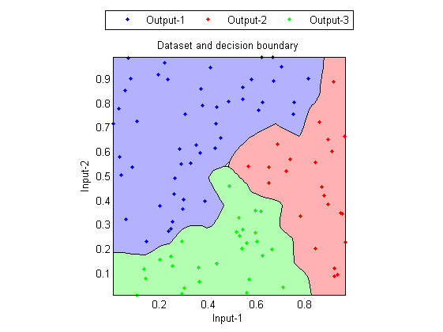

classifierTrain
Training a given classifier
Contents
Syntax
- cPrm=classifierTrain(classifier, DS, trainPrm)
- cPrm=classifierTrain(classifier, DS, trainPrm, showPlot)
- [cPrm, logLike]=classifierTrain(...)
- [cPrm, logLike, recogRate]=classifierTrain(...)
- [cPrm, logLike, recogRate, hitIndex]=classifierTrain(...)
Description
cPrm=classifierTrain(classifier, DS, trainPrm) returns the training results of a given classifier.
- classifier: a string specifying a classifier
- classifier='qc' for quadratic classifier
- classifier='nbc' for naive Bayes classifier
- classifier='gmmc' for GMM classifier
- classifier='knnc' for k-nearest-neighbor classifier
- classifier='linc' for linear classifier
- classifier='src' for sparse-representation classifier
- DS: data set for training
- trainPrm: parameters for training
- trainPrm.prior: a vector of class prior probability (Data count based prior is assume if an empty matrix is given.)
- cPrm: cPrm.class(i) is the parameters for class i, etc.
cPrm=classifierTrain(classifier, DS, trainPrm, showPlot) also plot the results if showPlot is 1.
[cPrm, logLike, recogRate, hitIndex]=classifierTrain(...) returns additional output arguments:
- logLike: log likelihood of each data point
- recogRate: recognition rate (if the desired output is given via DS)
- hitIndex: vector of indices of correctly classified data points in DS.
Example
DS=prData('3classes'); classifier='knnc'; [cPrm, logLike, recogRate, hitIndex]=classifierTrain(classifier, DS); DS.hitIndex=hitIndex; % Attach hitIndex to DS for plotting classifierPlot(classifier, DS, cPrm, 'decBoundary');